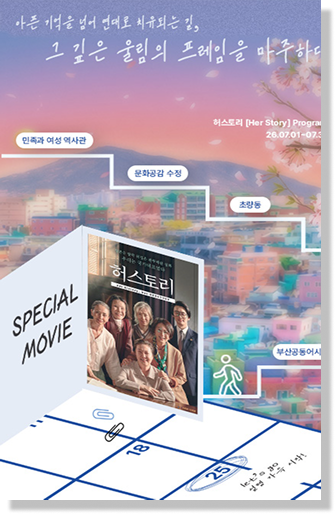
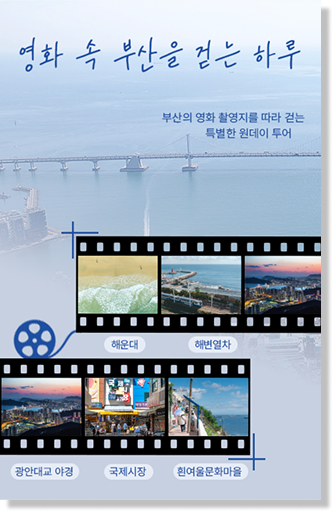
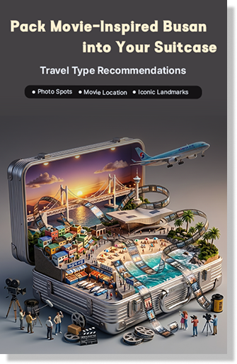
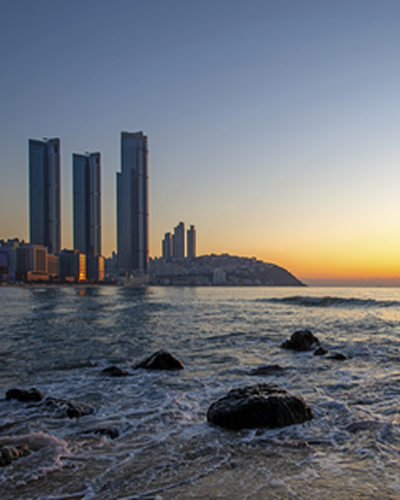
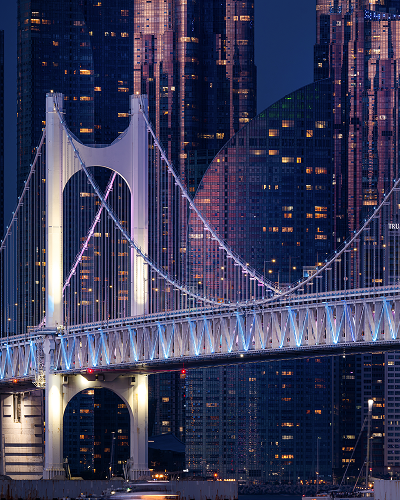
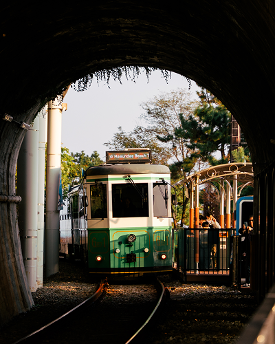
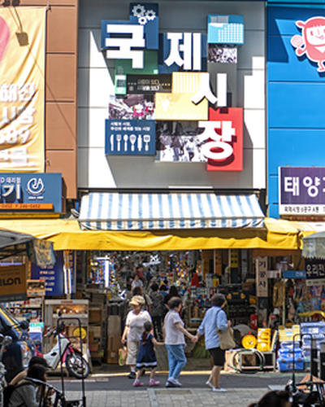
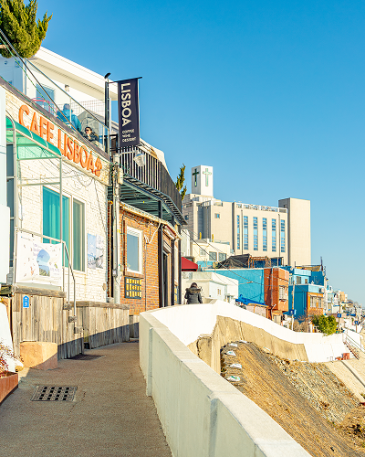

넓은 백사장과 아름다운 해안선을 자랑하고 있으며 얕은 수심과 잔잔한 물결로 해수욕장의 최적 조건을 갖춤
해마다 여름철 피서객을 가늠하는 척도로 이용될 만큼 국내 최대 인파가 몰리는 곳
해안선 주변에 크고 작은 빌딩들과 고급 호텔들이 우뚝 솟아있어 현대적이고 세련된 분위기의 해수욕장

국내 최대의 해상 복충 교량
상층부에서 바라보는 주변 경관이 일품으로써 끝없이 펼쳐진 바다와 오륙도, 동백섬과 달맞이 등 한눈에 들어옴
예술적인 조형미를 갖춘 최첨단 조명시스템이 구축되어 요일별, 계절별 다양하고 찬란한 불빛으로 색상을 연출할 수 있는 경관조명

동해남부선 폐선부지를 활용한 해안선을 따라 걷는도심 산책로
산책로 방향에 따라 광안대교, 달맞이, 마린시티 등 대표 관광지를 한눈에 담을 수 있는 전국적인 사진 스팟 및 트레킹 장소
동해남부선 옛 철도시설을 친환경적으로 재개발하여 해안절경을 따라 해운대 해변열차와 해운대 스카이캡슐을 운행

광복 이후 일본인들이 철수하면서 남긴 물건과 해외동포들이 가져온 물건들을 거래하기 위해 국제시장 자리를 장터로 삼으며 시장이 형성
“도떼기시장”이라 불리다가 “자유시장”으로, 미군부대에서 흘러나온 물건까지 취급하게 되면서 국제시장이라는 이름을 갖춤
오늘날 구제시장 골목, 팥빙수 골목, 먹자골목 등 다양한 볼거리와 함께 부산의 관광 상품으로 자리한 곳

피난민들의 애잔한 삶이 시작된 곳이자 현재는 마을 주민과 함께하는 문화마을공동체 흰여울문화마을
흰여울길은 봉래산 기슭에서 여러 갈래의 물줄기가 바다로 굽이쳐 내리는 모습이 마치 흰 눈이 내리는 듯 빠른 물살의 모습과 같 하여 이름이 지어짐
수많은 드라마 및 영화 작품의 촬영지로도 유명하고, 공/폐가를 리모델링하면서 현재는 영도의 생활을 느낄 수 있는 독창적인 문화 예술마을로 거듭남
프로그램을 예약할 수 있습니다.
오디오 가이드를 예약할 수 있습니다.